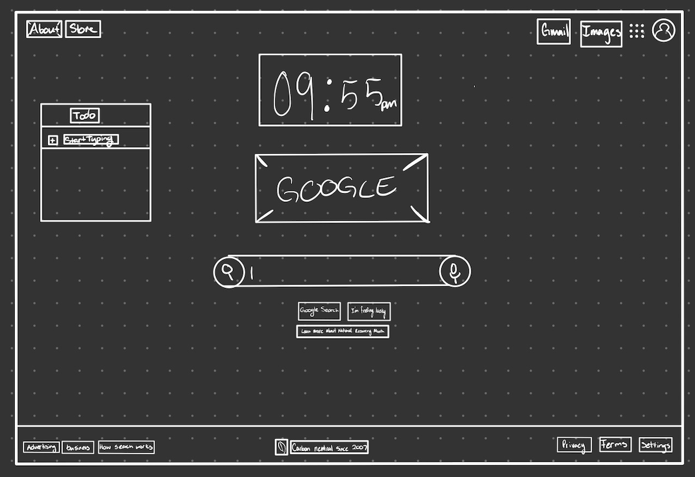

-
Using the favorite website you chose in homework 1, create a wireframe for one page of it using pen/paper, PowerPoint, or any your tool of choice. (use the 'img' tag!) Make sure to let us know what the name of your website is (Use the 'p' tag!)
Google Wireframe
-
Try to improve the website you've chosen, and create a redesigned wireframe of one page for the same website using the principles of visual hierarchy that you learned from the article.

Updated Google Wireframe
-
What is the goal of the website? Who is it intended for? How does the design accomplish this? Write 2-3 sentences answering these questions. (Use the 'p' tag again!)
Google is a web querying service developed to help everyday people access the world wide web more easily. As it is presently the most successfull search engine, it certainly is accomplishing its task.
-
Write 2-3 sentences about what problems your redesign addressed, and how it solved them.
My redesign added some more functionality to the main google page. It is usually very bare bones and people often neglect it in favor of using their url bar which (assuming it is configured to use google works just the same). I wanted to bring some functionality to the main page so that there would be a greater reason to use it over just the URL bar by adding a clock to the top which catches the eye and bring the attention to the web page even when people are used to the design as well as a todo list which takes up some of the empty space making it look more useful and of course fulfilling its purpose as a todo list.
NOTE: Make sure to include the wireframe images in the website and don't just put it in your assets folder!
Your wireframes should look something like this: